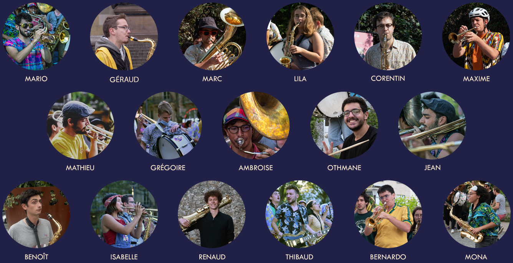
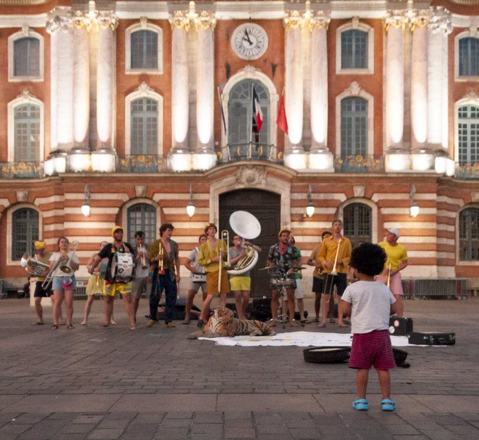

17 étudiants, une fanfare solidaire, un projet
Manzakin, c’est un projet solidaire et musical. Dans la continuité des projets Fanfare Sans Frontières, notre but est de partager ce que l’apprentissage de la musique nous a offert avec des jeunes issus de milieux défavorisés. Nous allons voyager en Equateur et au Nicaragua, pendant 5 mois, pour mettre en place des ateliers d’éveil musical et artistique en partenariat avec des ONGs locales.
Fanfare sans frontières
Fanfare Sans Frontières est une association loi 1901 qui supporte et assiste des fanfares solidaires, comme Manzakin ! C’est l’association qui nous permet d’avoir des conseils, des rencontres et des retours d’expériences de projets précédents, et de monter le nôtre comme des chefs.
La musique comme outil de développement personnel
Les compétences interpersonnelles, comme la communication, la créativité, le travail en groupe ou encore la gestion de projets sont souvent laissées de côté par les systèmes éducatifs traditionnels. Pourtant des organismes comme le Forum Économique Mondial les considèrent comme essentielles pour les citoyens de demain : et si l’expression artistique était un bon moyen de les développer ? Chez Manzakin, nous avons tous beaucoup appris au travers de la musique et des arts du spectacle, depuis tous petits pour certains, ou depuis à peine 2 ans pour d’autres. En organisant des ateliers et des projets avec des jeunes issus de milieux défavorisés, nous voulons les encourager à développer ces compétences, et aider les ONGs locales à former les citoyens de demain !
Et le départ, c’est pour quand ?
Mars 2021 ! C’est l’objectif que nous nous sommes fixé pour lancer notre voyage. Il ne faut pas aller plus vite que la musique : nous sommes encore étudiants, et il faut passer nos examens avant de partir à l’autre bout du monde... En attendant, nous mettons au point les ateliers, et nous réalisons des prestations de fanfare pour financer le projet. On en profite pour étoffer notre répertoire, et si la situation sanitaire nous le permet, peut-être pourrons nous faire profiter des jeunes d’Île-de-France de nos ateliers !
Nos ONG partenaires
Clave del Sur
Clave del Sur est implantée dans un quartier populaire à Guayaquil et propose des cours de musique aux enfants défavorisés. C'est là que nous allons commencer notre mission en encadrant des ateliers musicaux individuels et en groupe à des enfants de tout âge.
Ecuasol
La mission d'Ecuasol est d'apporter une aide aux enfants et adolescents des quartiers défavorisés de Quito, en Equateur, afin qu’ils accèdent à une éducation inculquant de solides valeurs humaines, académiques et sociales. Nous y effectuerons des ateliers d'éveil musical ainsi que la préparation d'un spectacle avec les enfants de l'ONG.
Plus d'informations sur nos prochaines ONGs partenaires en Equateur et au Nicaragua prochainement !
Qui sommes-nous ?
Nous sommes 18 étudiants ingénieurs de l'Ecole CentraleSupélec venant de tous horizons qui partageons la passion de la musique et du partage. 
Nous soutenir
Vous souhaitez soutenir notre action et participer à votre façon à nos ateliers ? Vous pouvez nous aider en participant financièrement à travers notre crowdfunding soutenu par International Impact, association partenaire d'Ecuasol. Grâce à ce partenariat, vos dons sont éligibles à la défiscalisation et soutiennent notre action pleinement. Nous vous proposons aussi des contreparties uniques alors n'hésitez pas à nous soutenir !
Nos prestations
Envie d'animer un de vos événements ?
Manzakin, c’est une fanfare qui sait animer la foule, faire danser et chanter ! Nous vous ferons voyager avec notre répertoire !
Les événements que l'on anime
Chacun de nos membres a près de 2 ans d'expérience dans l'animation musicale, qu'il s'agisse de fêtes de village, d'anniversaires, de mariages et bien d'autres évènements festifs !
Notre répertoire
Notre musique est très diverse et vous fera voyager, que soit à la Nouvelle Orléans avec notre musique de Brass Band ou de jazz, ou dans des régions plus froides avec nos morceaux venant d'Europe de l'Est. Nous jouons aussi nos propres arrangements de grands classiques de la musique française ou des morceaux plus modernes ! L'ambiance sera présente !
Notre expertise
Nous avons déja joué sous d'autres noms dans de nombreuses destinations en Europe au cours des deux dernières années, que ce soit en France ou même dans les pays frontaliers ! Nous avons déja effectué de nombreuses prestations et joué dans différents bars, festivals.